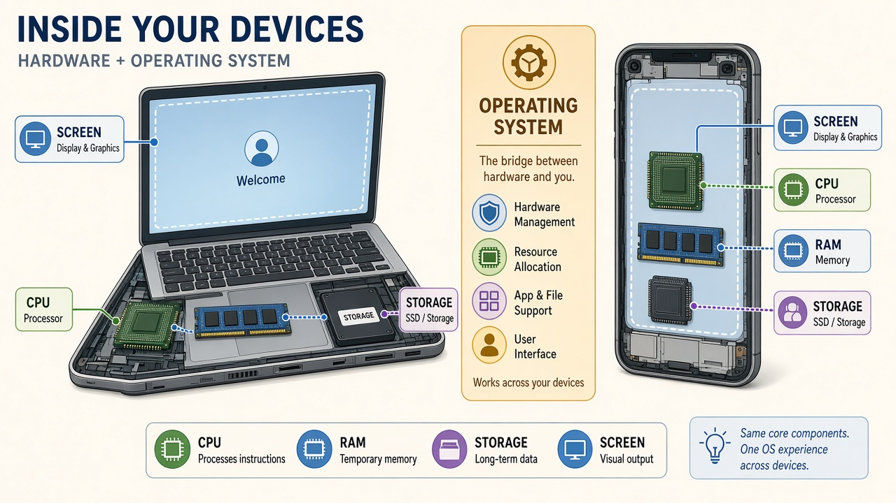

ONLINE · 1h
M1 · 认识智能 · AI Literacy
把世界拆成一层套一层
练抽象：自己定标准分类；看清 AI 是「猜下一个词」的引擎；线下把手机 / 电脑 / 网络剥开。

本课主线：分类 → 概念地图 → 同题两问 → 线下分层
ONLINE · 抽象热身
01 · 分类 · You set the rule
同一堆东西，换标准就换队伍 Classification is a judgment
先选标准，再点物件。抽象不是「找正确答案」，是说清你按什么规则切。
ONLINE · 抽象
01 · 方法 · Abstraction
抽象 = 你定标准，抽出共性 Name the rule, pull the pattern
1 · 定标准「会不会自己动」是你选的刀，不是世界自带的标签。
2 · 归类同一物件在不同标准下可以换组——换刀就换图。
3 · 抽共性说出这一组为什么能放一起。后面看 AI、看电脑，都用这一步。
课堂上齐读：表面上是……，底下我按……标准，抽到了……
ONLINE · AI 是什么
02 · 大模型 · Next-token
它不是在「想」，是在猜下一个词 Prediction, not a mind
我口渴了，想喝一杯 ？
听起来像回答。底下：按概率接词，再拼成整段。
ONLINE · 概念地图
02 · 四个名字 · Concept map
各管一层，不是四个花名 LLM · Prompt · Agent · Skills
ONLINE · 同题两问
03 · 提问质量 · Same intent
同一件事，两种问法 Vague vs precise
● 模糊
「人工智能是怎么回事？」
- 对象太大，答什么都像对
- 没有可观察的步骤
- 模型容易讲故事充数
● 清楚
「大模型收到我的句子后，如何一次只预测下一个词，再拼成整段回答？」
- 有起点、过程、产物
- 能追问、能核对
- 接住了刚才的概念地图
习惯：先把过程说清楚，再问 AI。M2 会把这套写成角色 / 任务 / 约束 / 标准。
ONLINE · 收束
线上小结 · Into offline
线上立住三件事 Then peel the machine
AILLM 在猜下一词；Prompt / Agent / Skills 各管一层。
线下：同一双眼睛，去剥手机、电脑和「点发送」——一层套一层。
OFFLINE · 2h
M1 · 线下 · Layers
手机也是同一种机器
外壳不同。里面都是：处理器 · 内存 · 存储 · 输入输出。中间夹着操作系统。

活动：左右打开「关于本机」和「设置 → 关于手机」，三项对上号
OFFLINE · 分层
04 · 一层套一层 · Hardware → OS → App
点开图层 Peel the stack
硬件：芯片在算、内存在跑、存储还在。
OFFLINE · 发送
05 · 点发送 · Where the ask goes
你这边的程序，在问远处的程序 Client asks · remote answers
OFFLINE · 产出
06 · 画层级图 · Your stack
小组产出：一张抽象层级图 Hardware → OS → App → Network
CHECK 1
本机三件
处理器 / 内存 / 存储 —— 在设置里指给我看。
CHECK 2
一层套一层
画：硬件 → 系统 → 你正在用的一个 App。
CHECK 3
发送多一跳
若 App 要联网：再画「远处那台机器」。
OFFLINE · 三问法
07 · 现象 → 机制 → 抽象 · Transfer
拆一个身边设备 Phone · router · gate · earbuds…
现象
你看见什么
灯、声音、屏幕、门开了……
机制
底下谁在干活
传感器？芯片？远处服务器？
抽象
用一句分层说
「表面上是……，底下其实是……」
OFFLINE · 收束
M1 结束 · Into M2
这周末带走什么 Abstraction + AI map + stack drawing
M2：把抽象标准写成规矩，让 AI 听得懂；并知道它会一本正经地错。国庆营地课见 09-ai-camp-deck.html —— 两套教材，不混用。